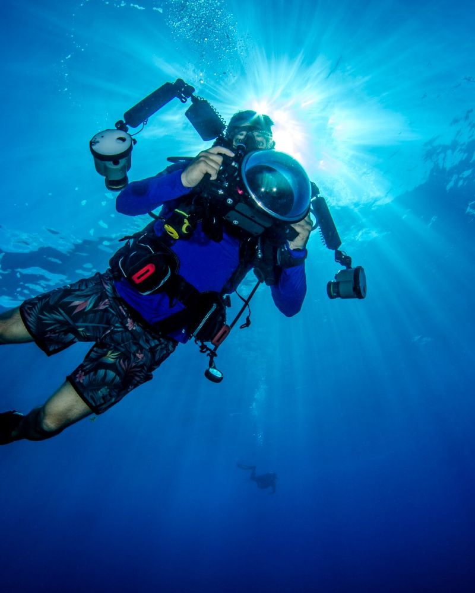
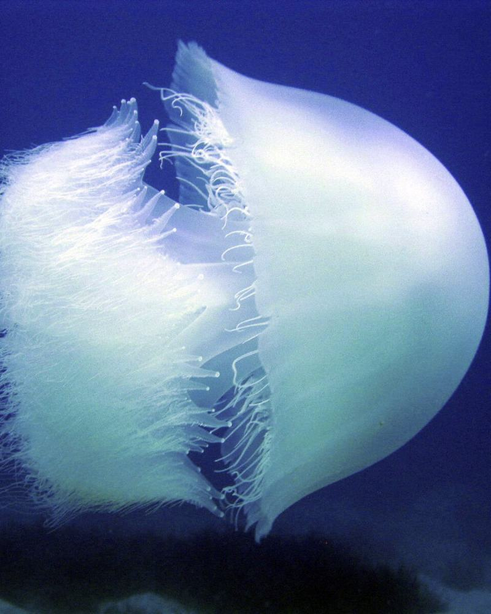
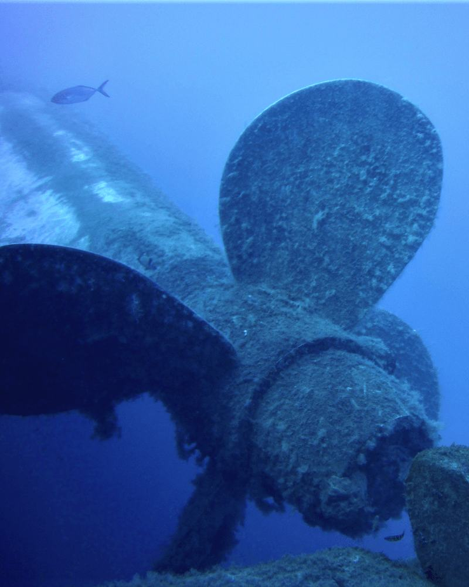

0 m Specialties
Fourteen PADI specialties to take you further
A specialty lets you give your full attention to one side of diving: deeper dives, wrecks, sharper skills or the life on the reef.
We teach all fourteen here in Ayia Napa. Take the one that excites you most, or put a few together.
Why specialise
Follow your curiosity
Specialties sit alongside the core PADI courses. Each one takes a single subject and gives you the time to get properly good at it.
Choose by the dives you have planned, or simply by what you enjoy underwater. We have been teaching divers in Ayia Napa since 1982, and we are happy to help you decide.
- PADI 5 Star Instructor Development Centre
- Full-time PADI Course Director
- Multilingual instructors
All fourteen
Find the one that fits you
-
Deep Diver
Planning and making deeper dives with confidence.
-
Enriched Air Diver
Diving with enriched air nitrox.
-
Wreck Diver
Getting to know wrecks and how to explore them well.
-
Boat Diver
Feeling at home when the dive starts from a boat.
-
Digital Underwater Photographer
Bringing better pictures home from your dives.
-
Night Diver
Diving after dark, by torchlight.
-
Peak Performance Buoyancy
Fine-tuning your buoyancy, trim and control.
-
Search and Recovery Diver
Finding what was lost underwater and bringing it back up.
-
Self-Reliant Diver
Planning and diving with greater independence.
-
Emergency Oxygen Provider
Being ready to give emergency oxygen when it matters.
-
Underwater Naturalist
Understanding the life you meet underwater.
-
Underwater Navigator
Finding your way with a compass and natural clues.
-
Sidemount Diver
Diving with your cylinders worn at your sides.
-
Fish Identification
Putting names to the fish you see.

On the reef
Sharper skills for every shore dive
Local dives
Our nine local sites around Cavo Greko are all dived from shore, usually two dives per trip.
Steadier buoyancy, surer navigation and a better eye for the life around you make each of them more rewarding. Tell us where you would like to dive and we will help you choose a specialty to match.
See the local dive sites
On the wrecks
Deeper down, the wrecks are waiting
Wreck trips
The Liberty, sunk in May 2009 as a dive site, is good for wreck training and underwater photography.
The Nemesis III lies near it and is dived on the same trip, and the Zenobia off Larnaca is there for advanced divers. If the wrecks are where you are heading, ask us which specialties to line up first.
See the wreck trips
Specialty packages
Found one you like? Or three?
Contact us for more information and packages.